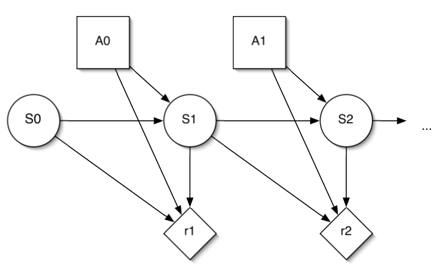

Reinforcement Learning Basics
Posted on August 18, 2018
When to use RL
- Data in the form of trajectories.
- Need to make a sequence of related decisions.
- Observe feedback to choice of actions.
- Tasks that require both learning and planning.
Challenges with RL
- Typically to train a RL system, a static dataset is not enough. We need access to the environment & we need to know how the actions affect the environment.
- Joint learning & planning from correlated samples.
- Data distribution changes over time with action choice.
The goal of RL
- Maximize return, $U_t$ which is the sum of rewards starting from step $t$.
- Episodic task: consider return over finite horizon (e.g. games, maze). $$ U_t = r_t + r_{t+1} + ... + r_{\tau} $$
- Continuing task: consider return over infinite horizon (e.g. juggling, balancing). Here, we introduce a nation of discount factor denoted by $\gamma$ that is multiplied by the reward to reduce influence of reward over time. $$ U_t = r_t + \gamma r_{t+1} + \gamma^2 r_{t+2} + ... = \sum_{k=0: \infty} \gamma^k r_{t+k} $$
- Discount factor $\gamma \in [0, 1)$, decays the value of rewards exponentially.
- Intuition : Receiving \$80 today is worth the same as \$100 tomorrow assuming $\gamma = 0.8$.
Definitions
one can identify four main subelements of a reinforcement learning system: a policy, a reward signal , a value function, and, optionally, a model of the environment.Some terminology
- Reward : 1 step numerical feedback
- Return : Sum of rewards over the agent's trajectory
- Value : Expected sum of reward over the agent's trajectory
- Utility : Numerical fnction representing preferences. Sometimes in RL, for simplicity we can assume Utility $=$ Return
Markov Decision Processes (MDPs)
- A set of states $s \in S$
- A set of actions $a \in A$
- A transition function $T(s, a, s')$
- You are in some state $s$, you take action $a$, $s'$ is a possible result.
- This is a conditional probability $P(s'|s,a)$.
- Also called the model or the dynamics.
- A reward function $R(s, a)$
- Initial state distribution $\mu(s)$
The Markov property
The distribution over future states depends only on the present state and action, not on any other previous events. $$ Pr(s_{t+1} | s_0, ..., s_t, a_0, ... , a_t) = Pr(S_{t+1}\,|\, s_t, a_t) $$ We can think of state, as sufficient amount of information required to predict the future. Markov generally means that given the present state, the future and the past are independent. In other words, if we know the state at the current time, whatever happened in the past, is independent of what is going to happen in the future. So if we were to look at all the states, we would have something like: $$ P(S_{t+1} = s' | S_t = s_t, A_t=a_t, S_{t-1}=s_{t-1}, A_{t-1},... S_0=s_0) $$ With Markov assumption, this simplifies to $\rightarrow$ $$ P(S_{t+1}=s' | S_t = s_t, A_t = a_t) $$

Behaviour: The policy
Policy $\pi$ defines the action-selection strategy at every state: $$ \pi(s,a) = P(a_t=a|s_t=s) \\ \pi : S \rightarrow A $$ A policy can be a deterministic strategy where the mapping is from state to action, or stochastic, meaning that we have a probability of taking actions at a given state, this depends on the task. A policy is not part of the environment, but rather, what the agent is trying to learn.The goal is, given a space of policies, find a policy that maximizes expected total reward. $$ argmax_{\pi}\,E_{\pi} [r_0 + r_1 + ... + r_T \,|\,s_0] $$
- Where $argmax$ here returns the argument that maximizes that function.
Value functions
The expected return of a policy, for every state, is called the value function. $$ V^{\pi}(s) = E_{\pi}[r_t + r_{t+1} + ... + t_T \,|\,s_t = s] $$ You can read this as: The expected value over policy $\pi$, for the sum of rewards, given you are at a patricular state $s$.The value of a policy
We can re-write the equation for value function above, by splitting the first term and the other terms: $$ V^{\pi}(s) = E_{\pi}[r_t] + E_{\pi}[r_{t+1} + ... + t_T \,|\,s_t = s] $$ Here the first term is the immediate reward. And the other term is the future reward, bundled up. $$ V^{\pi}(s) = E_{\pi}[r_t] + E_{\pi}[r_{t+1} + ... + t_T \,|\,s_t = s] $$ $$ V^{\pi}(s) = \sum_{a \in A} \pi(s,a)R(s,a) + E_{\pi}[r_{t+1} + ... + r_T\, | \, s_t=s] $$ We want to try to get a recursive formulation for the value function because otherwise this value function depends on the full future. With this in mind, we are going to re-write the equation above. $$ V^{\pi}(s) = \sum_{a \in A} \pi(s,a)R(s,a) + {\color{red}\sum_{a \in A} \pi(s,a) \sum_{s' \in S} T(s, a, s')} E_{\pi}[r_{t+1} + ... + r_T\, | \, s_{t + 1}=s'] $$ The red term is expectation over 1-step transition. Here we are still conditioning on $s_t$. So in this case, we are starting at $s_t$, then look at $r_{t+1}$. So we need to express this expectation, conditioned on starting at $t+1$. Think of this as, what is the expectation of where I'm going to be, what is going to be my $s_{t+1}$? To do this, we also factor in the transition probability and the probability of taking each of the actions. Since we had already defined the last term here, we can substitute it with $V^{\pi}(s')$. $$ V^{\pi}(s) = \sum_{a \in A} \pi(s,a)R(s,a) + \sum_{a \in A} \pi(x,a) \sum_{s' \in S}T(s,a,s') {\color{red}V^{\pi}(s')} $$Bellman's equation
There are two forms of Bellman's equation:- State value function for a fixed policy: $$ V^{\pi}(s) = \sum_{a \in A} \pi(s,a)[{\color{pink}R(s,a)} + \gamma {\color{orange}\sum_{s' \in S} T(s,a,s') V^{\pi}(s')}] $$ In the equation above, we have Immediate reward , and future expected sum of rewards. When $S$ is a finite set of states, this is a system of linear equations (one per state) with a unique solution $V_{\pi}$.
- State-action value function: $$ Q^{\pi}(s,a) = R(s,a) + \gamma \sum_s' T(s,a,s')[\sum_{a' \in A} \pi(s', a')Q^{\pi}(s',a')] $$
Seeing this problem this way, we can write the Bellman's equation in matrix form: $$ V_{\pi} = R_{\pi} + \gamma T_{\pi} V_{\pi} $$ Where $V_{\pi}$ is a vector representing value of all the states, $R_{\pi}$ is another vector representing reward for each of the states. The transition matrix is an $S \times S$ square matrix. This can be solved exactly (subject to certain conditions): $$ V_{\pi} = (I - \gamma T^{\pi})^{-1} R^{\pi} $$ Note that this is conditioned for a fixed policy. We haven't started tackling the task of looking for good policies yet. This is rather a simple strategy of saying, let's enumerate all possible policies, and then evaluate them one by one.
Iterative Policy Evaluation: Fixed policy
The idea here is to turn Bellman equations into update rules. This is a dynamic programming algorithm, guaranteed to converge, because we are introducing the discount factor $\gamma$ and the effect of this is to shrink how much we care about the future.- Start with some initial guess $V_0(s), \forall s$. (Can be 0 or r(s).)
- During every iteration $k$, update the value function for all states: $$ V_{k+1}(s) \leftarrow (R(s, \pi(s)) + \gamma \sum_{s' \in S} T(s, \pi(s), s')V_k(s')) $$
- Stop when the maximum changes between two iterations is smaller than a desired threshold (basicallywhen the value stops changing.)
Convergence of Iterative Policy Evaluation
Let's consider the absolute error in our estimate $V_{k+1}(s)$: $$ \begin{align} |V_{k+1}(s) - V^{\pi}(s)| = \Big{|}\sum_a(s,a)(R(s,a) + \gamma \sum_{s'}T(s,a,s')V_k(s')) \\ - \sum_a \pi (s,a)(R(s,a) + \gamma \sum_{s'} T(s,a,s')V^{\pi}(s'))\Big{|} \\ = \gamma \Big{|}\sum_a \pi(s,a) \sum_{s'}T(s,a,s')(V_k(s') - V^{\pi}(s')) \Big{|} \\ \leq \gamma \sum_a \pi(s,a) \sum_{s'}T(s,a,s')|V_k(s') - V^{\pi}(s')| \end{align} $$ Remember that as long as $\gamma < 1$, the error contracts and eventually goes to 0.Optimal policies and optimal value functions
Optimal value function $V^*$ is the highest value that can be achieved for each state. $$ V^*(s)=max_{\pi} V^{\pi}(s) $$ Any policy that achieves $V^*$ is called an optimal policy $\pi^*$. There can only be one optimal value function, but there can be multiple optimal policies that get you to that value function. More concretely, for each MDP, there is a unique optimal value function but the optimal policy is not necessarily unique.Finding a good policy: Policy iteration
- Start with an initial policy $\pi_0$ (e.g. random)
- Repeat:
- Compute $V^{\pi}$ using iterative policy evaluation.
- Compute a new policy $\pi^{'}$ that is greedy w.r.t $V^{\pi}$.
- Terminate when $\pi = \pi^{'}$ i.e. policy doesn't change anymore.
Finding a good policy: Value iteration
With policy iteration, we compute a new policy on each round. We can take what we had previouslyfor policy evaluation, fold this improvement in within that. We can essentially turn he Bellman optimality equation into an interative update rule:- Start with an arbitrary initial approximation $V_0(s)$
- On each iteration, update the value function estimate: $$ \color{purple}V_k(s) = max_{a \in A}(R(s,a) + \gamma \sum_{s' \in S} T(s,a,s')V_{k-1}(s')) $$
- Stop when max value change between iterations is below threshold.
Recap of these three related algorithms:
- Policy evaluation: Fix the policy, estimate its value
- $ \color{purple} O(S^3)$
- To understand the time complexity, we can think of the simple case where we need to solve a linear system of equations which is a cubic number of operations in terms of number of states.
- Policy iteration: Find the best policy at each state.
- Remember the extra step here was adding the greedy improvement.
- $ \color{purple} O(S^3+S^2A)$
- Extra step for computing the Bellman equation for every state.
- Value iteration: Find the optimal value function.
- $ \color{purple} O(S^2A)$